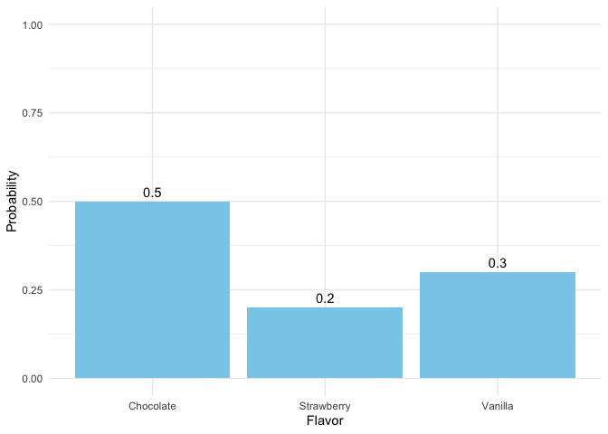
4 Probability and Distributions
I have studied many languages-French, Spanish and a little Italian, but no one told me that Statistics was a foreign language. – Charmaine J. Forde
4.1 From description to inference
Up to this point, we’ve focused on experimental design and descriptive statistics: how to collect data and how to summarize it with graphs and averages. But statistics is more than description. Its power is in inference, using limited data to say something about a broader population. Inference relies on two foundations: probability theory and the behavior of samples from distributions.
4.2 Probability vs. Statistics
Probability and statistics are closely related but not the same.
Probability starts with a known model of the world and asks: what kinds of data are likely?
- Example: What is the chance of flipping 10 heads in a row with a fair coin?
- Example: What is the chance of drawing five hearts from a shuffled deck?
Here, the model is known (fair coin, fair deck). Data are imagined.
Statistics starts with data and asks: what model of the world generated these data?
- Example: If a coin comes up heads 10 times in a row, is it fair?
- Example: If five cards in a row are hearts, was the deck shuffled?
Here, the data are known. The model is what we want to learn about.
Takeaway:
Probability works from model → data. Statistics works from data → model.
Because inference depends on probability, we start this chapter with probability foundations.
4.3 What does probability mean?
Statisticians agree on the rules of probability but not always on what the word itself means. In everyday life we’re comfortable saying something is “likely” or “unlikely,” but the formal meaning varies.
Imagine a soccer game between Arsenal and West Ham. You say Arsenal has an 80% chance of winning. That could mean:
Long-run frequency: if the teams played many times, Arsenal would win ~8 out of 10.
Betting odds: you’d only take a wager if payoffs reflected an 80/20 split.
Subjective belief: your confidence in Arsenal is four times stronger than in West Ham.
All three interpretations follow the same rules but reflect different philosophies.
For our purposes, the math works the same either way. In this course we’ll use the frequentist view, so you can think of probability as the long-run proportion of times an event would occur if you could repeat the process many times (that’s #1 above).
4.4 Basic probability theory
At the core of probability theory is the idea of a distribution: a set of possible outcomes and their probabilities.
Suppose we track which ice cream flavor a customer chooses: chocolate, vanilla, or strawberry. Each choice is an elementary event, and the set of all possible events is the sample space, \(S\):
\(S = {\text{chocolate}, \text{vanilla}, \text{strawberry}}\)
If we record how often each flavor is chosen, we might estimate the following probabilities:
Flavor Probability:
Chocolate \(P(\text{chocolate})=0.5\)
Vanilla \(P(\text{vanilla})=0.3\)
Strawberry \(P(\text{strawberry})=0.2\)
These probabilities form a distribution. Each value lies between 0 and 1, and together they sum to 1.
Non-elementary events
We can also define events that group multiple outcomes.
For example, let \(A=\) “not chocolate.” Then:
\[P(A) = P(vanilla) + P(strawberry) = 0.5\]
4.5 Rules of Probability
Some basic rules follow from this framework. Let’s consider a sample space \(X\) that consists of elementary events \(x\), and two non-elementary events, which we’ll call \(A\) and \(B\).
Here are our rules:
| English | Notation | Formula |
|---|---|---|
| not A | \(\neg A\) | \(P(\neg A) = 1 - P(A)\) |
| A and B | \(A \cap B\) | \(P(A \cap B) = P(A\mid B)\,P(B) = P(B\mid A)\,P(A)\) |
| A or B | \(A \cup B\) | \(P(A \cup B) = P(A) + P(B) - P(A \cap B)\) |
| A given B | \(A \mid B\) | \(P(A \mid B) = \dfrac{P(A \cap B)}{P(B)}\) |
These rules look abstract at first, but they are just formal ways of describing common-sense situations. Let’s work through them step by step with our ice cream example. We’ll assign probabilities to each flavor and then show how the rules play out with real numbers. That way, the notation is always tied to something you can picture.
Let’s add a fourth flavor and assign some probabilities:
Flavor Probability: - Chocolate \(P(\text{chocolate})=0.4\)
Vanilla \(P(\text{vanilla})=0.3\)
Strawberry \(P(\text{strawberry})=0.2\)
Rocky Road \(P(\text{rocky road})=0.1\)
Notice these add to 1, as they must.
Now let’s revisit the rules with actual numbers. We’ll have two non-elementary events, \(A\) and \(B\), defined as:
\(A = (\text{chocolate, vanilla, strawberry})\)
\(B = (\text{chocolate, rocky road})\)
4.5.1 Not \(A\)
\(A = (\text{chocolate, vanilla, strawberry})\)
\(P(A) = 0.4 + 0.3 + 0.2 = 0.9\)
So, \(P(\neg A) = 1 - P(A) = 1 - 0.9 = 0.1\)
Explanation: This adds up logically. The chance of not choosing chocolate, vanilla, or strawberry is equal to the chance of Rocky Road.
4.5.2 \(A\) and \(B\)
Explanation: The only overlap between \(A\) and \(B\) is chocolate: $A B = ()
So \(P(A \cap B) = 0.4\)
4.5.3 \(A\) or \(B\)
4.5.4 \(A \cup B = (\text{chocolate, vanilla, strawberry, rocky road})\)
In words, this emans, what’s the probability of choosing a flavor that’s in A or a flavor in B. Since our entire sample space is only 4 flavors, this is our whole sample space, so \(P(A \cup B)\) = 1
Conditional probability
Suppose we want \(P(B|A)\): the probability of choosing \(B\) (chocolate or rocky road) given that we already know the choice was from \(A\) (chocolate, vanilla, strawberry). We know \(P(A \cap B)\) and \(P(A)\) from above.
By the rule, \(P(B|A) = \frac{P(A \cap B)}{P(A)} = \frac{0.4}{0.9} \approx 0.44\)
In words: if you know someone picked from the “\(A\) group” flavors, there’s about a 44% chance they chose chocolate (the only overlapping flavor).
4.6 Probaiblity Distributions
A probability distribution is a rule that assigns probabilities to all possible outcomes of a random variable. Many distributions exist, but this book mostly uses five: Binomial, Normal, \(t\), χ² (“chi-square”), and \(F\). We’ll focus on Binomial and Normal here; the others appear when we do inference.
For continuous distributions like the normal, probabilities work differently than in the discrete case. You cannot ask for the probability of one exact value (e.g., \(P(X = 23)\)), because the answer is essentially zero. Instead, we calculate the probability of being in a range, such as \(22.5 \leq X \leq 23.5\).
This is why the \(y\)-axis of a normal curve is labelled probability density. The height of the curve at a point, \(p(x)\), is not itself a probability. Instead, probabilities come from the area under the curve between two values. For example, about 68% of values from a standard normal fall between −1 and 1, because the area between −1 and 1 is 0.68.
In R, functions like dnorm() return the density (the curve’s height), while pnorm() and qnorm() work with cumulative probabilities and quantiles, which are usually more useful for applied problems.
4.6.1 The binomial distribution
The binomial distribution models the number of “successes” in a fixed number of independent trials.
- A trial is a single attempt with two possible outcomes (success or failure).
- The success probability is the chance of success on any one trial, usually written as \(\theta\).
- The size parameter \(N\) is the number of trials.
- The random variable \(X\) is the number of successes observed in those \(N\) trials.
We write this as:
\(X \sim \text{Binomial}(N, \theta)\)
For example, if you flip a fair coin 20 times (\(N=20\), \(\theta=0.5\)), the binomial distribution tells you the probability of getting 0 heads, 1 head, 2 heads … all the way up to 20 heads. The bars of the distribution in Figure 4.2 show the probability of each outcome, and the total always sums to 1.

Two common queries
- To find the exact probability of getting 4 heads: \(P(X=4)\)
#> [1] 0.004620552The probability is about \(0.5%\).
- Find the cumulative probability. We specify a particular quantile q , and we get the probability of obtaining an outcome smaller than or equal to q.
For \(P(X \le 4)\):
#> [1] 0.005908966The probability is about \(0.6%\)
The probability is slightly higher here, becuase it also includes hte probability we could get 3, 2, or 1 heads as well.
Note
R’s distribution helpers (for every distribution)
• d* = exact probability (PMF/PDF)
• p* = cumulative probability P(X \le q)
• q* = quantile (inverse of p*)
• r* = random drawsFor binomial: dbinom, pbinom, qbinom, rbinom. For discrete distributions, some percentiles don’t exist exactly; qbinom returns the smallest x with P(X x) p.
4.7 The normal distribution
The normal distribution describes variables that can take on a wide range of values, clustered around a central point. The normal distribution is our most important distribution. It’s also sometimes called a Gaussian distribution or a bell curve.
- The mean \(\mu\) is the center of the distribution.
- The standard deviation \(\sigma\) measures spread: how tightly or widely values are clustered around the mean.
- The random variable \(X\) represents the outcome, which can be any real number.
We write this as:
\(X \sim \text{Normal}(\mu, \sigma)\)
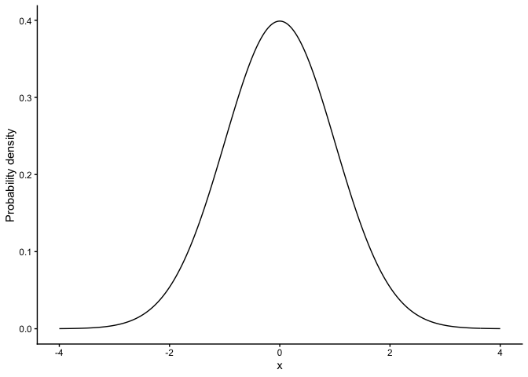
Changing \(\mu\) shifts the curve left/right; changing \(\sigma\) widens/narrows it (area always = 1).
68–95–99.7 rule: - ~68% within 1σ, - ~95% within 2σ, - ~99.7% within 3σ.
Important: In this distribution, our probability is the area (not height). For continuous distributions P(X = x) = 0; we compute \(P(a \le X \le b)\) as the area under the curve between \(a\) and \(b\). See Figure 4.4.
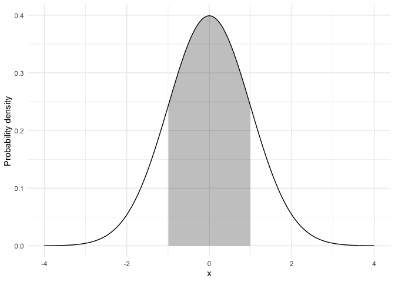
Two common queries
What is the probability that x is exactly, less than, or greater than, a given value? For example:
\(P(X \le 1.64)\) for \(X \sim \text{Normal}(0,1)\)
#> [1] 0.9494974In a normal distribution with a mean of 0 and standard deviation of 1, the probability the value is less than or equal to 1.64 is about 95%.
- What value correspondds to the xx-th percentile in a given normal distribution?
For example, what value corresponds to the 97.5th percentile?
#> [1] 1.959964Takeaway: For continuous variables, use areas (via pnorm/qnorm), not bar heights.
For example, suppose exam scores in a class are centered around 70 (\(\mu = 70\)) with a standard deviation of 10 (\(\sigma = 10\)). The normal distribution tells you how likely it is to see a score near 70, or further away (like 50 or 90). You can also find the score that correspnods to the 80th percentile, say.
Unlike the binomial, the normal distribution is continuous, any real number is possible, and probabilities are represented by the area under the smooth bell-shaped curve.
4.8 Summary of Probability
Summary: Probability
In this section we introduced the building blocks of probability, with an emphasis on the parts most relevant for statistics.
What probability means: We use the frequentist view—probability as the long-run proportion of times an event occurs.
Distributions: A probability distribution assigns probabilities to all possible outcomes of a random variable. For discrete variables (like coin flips), probabilities are attached to each outcome; for continuous variables (like exam scores), probabilities come from areas under a curve.
Rules of probability: Complements, intersections (and), unions (or), and conditional probabilities all follow from the basic distribution framework.
Key distributions:
- Binomial—counts successes across \(N\) independent trials.
- Normal—describes continuous outcomes centered at a mean, with spread determined by the standard deviation.
- Others (\(t\), \(\chi^2\), \(F\)) appear later when we turn to inference.
Takeaway: probability provides the language and tools that make statistical inference possible. Once we understand how outcomes behave under these distributions, we can ask questions about samples, uncertainty, and whether results are surprising enough to change what we believe about the world.
4.9 Samples, populations and sampling
Remember, the role of descriptive statistics is to concisely summarize what we do know. In contrast, the purpose of inferential statistics is to “learn what we do not know from what we do”. What kinds of things would we like to learn about? And how do we learn them? These are the questions that lie at the heart of inferential statistics, and they are traditionally divided into two “big ideas”: estimation and hypothesis testing. The goal in this chapter is to introduce the first of these big ideas, estimation theory, but we’ll talk about sampling theory first because estimation theory doesn’t make sense until you understand sampling. So, this chapter divides into sampling theory, and how to make use of sampling theory to discuss how statisticians think about estimation. We have already done lots of sampling, so you are already familiar with some of the big ideas.
Sampling theory plays a huge role in specifying the assumptions upon which your statistical inferences rely. And in order to talk about “making inferences” the way statisticians think about it, we need to be a bit more explicit about what it is that we’re drawing inferences from (the sample) and what it is that we’re drawing inferences about (the population).
In almost every situation of interest, what we have available to us as researchers is a sample of data. We might have run experiment with some number of participants; a polling company might have phoned some number of people to ask questions about voting intentions; etc. Regardless: the data set available to us is finite, and incomplete. We can’t possibly get every person in the world to do our experiment; a polling company doesn’t have the time or the money to ring up every voter in the country etc. In our earlier discussion of descriptive statistics, this sample was the only thing we were interested in. Our only goal was to find ways of describing, summarizing and graphing that sample. This is about to change.
4.9.1 Defining a population
A sample is a concrete thing. You can open up a data file, and there’s the data from your sample. A population, on the other hand, is a more abstract idea. It refers to the set of all possible people, or all possible observations, that you want to draw conclusions about, and is generally much bigger than the sample. In an ideal world, the researcher would begin the study with a clear idea of what the population of interest is, since the process of designing a study and testing hypotheses about the data that it produces does depend on the population about which you want to make statements. However, that doesn’t always happen in practice: usually the researcher has a fairly vague idea of what the population is and designs the study as best he/she can on that basis.
Sometimes it’s easy to state the population of interest. For instance, in the “polling company” example, the population consisted of all voters enrolled at the a time of the study – millions of people. The sample was a set of 1000 people who all belong to that population. In most situations the situation is much less simple. In a typical a psychological experiment, determining the population of interest is a bit more complicated. Suppose I run an experiment using 100 undergraduate students as my participants. My goal, as a cognitive scientist, is to try to learn something about how the mind works. So, which of the following would count as “the population”:
All of the undergraduate psychology students at the University of Adelaide?
Undergraduate psychology students in general, anywhere in the world?
Australians currently living?
Australians of similar ages to my sample?
Anyone currently alive?
Any human being, past, present or future?
Any biological organism with a sufficient degree of intelligence operating in a terrestrial environment?
Any intelligent being?
Each of these defines a real group of mind-possessing entities, all of which might be of interest to me as a cognitive scientist, and it’s not at all clear which one ought to be the true population of interest.
4.9.2 Simple random samples
Irrespective of how we define the population, the critical point is that the sample is a subset of the population, and our goal is to use our knowledge of the sample to draw inferences about the properties of the population. The relationship between the two depends on the procedure by which the sample was selected. This procedure is referred to as a sampling method, and it is important to understand why it matters.
To keep things simple, imagine we have a bag containing 10 chips. Each chip has a unique letter printed on it, so we can distinguish between the 10 chips. The chips come in two colors, black and white.
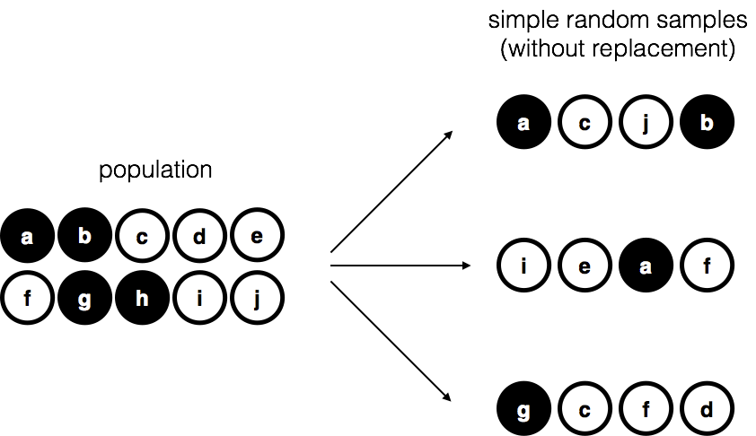
This set of chips is the population of interest, and it is depicted graphically on the left of Figure 4.5.
As you can see from looking at the picture, there are 4 black chips and 6 white chips, but of course in real life we wouldn’t know that unless we looked in the bag. Now imagine you run the following “experiment”: you shake up the bag, close your eyes, and pull out 4 chips without putting any of them back into the bag. First out comes the \(a\) chip (black), then the \(c\) chip (white), then \(j\) (white) and then finally \(b\) (black). If you wanted, you could then put all the chips back in the bag and repeat the experiment, as depicted on the right hand side of Figure 4.5. Each time you get different results, but the procedure is identical in each case. The fact that the same procedure can lead to different results each time, we refer to it as a random process. However, because we shook the bag before pulling any chips out, it seems reasonable to think that every chip has the same chance of being selected. A procedure in which every member of the population has the same chance of being selected is called a simple random sample. The fact that we did not put the chips back in the bag after pulling them out means that you can’t observe the same thing twice, and in such cases the observations are said to have been sampled without replacement.
To help make sure you understand the importance of the sampling procedure, consider an alternative way in which the experiment could have been run. Suppose that my 5-year old son had opened the bag, and decided to pull out four black chips without putting any of them back in the bag. This biased sampling scheme is depicted in Figure 4.6.
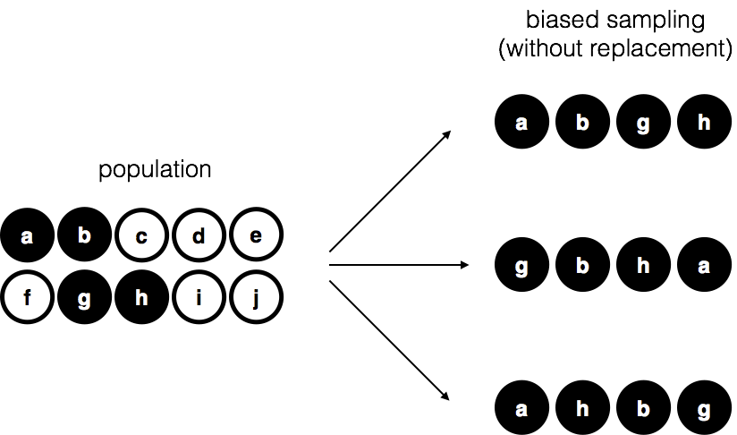
Now consider the evidentiary value of seeing 4 black chips and 0 white chips. Clearly, it depends on the sampling scheme, does it not? If you know that the sampling scheme is biased to select only black chips, then a sample that consists of only black chips doesn’t tell you very much about the population! For this reason, statisticians really like it when a data set can be considered a simple random sample, because it makes the data analysis much easier.
A third procedure is worth mentioning. This time around we close our eyes, shake the bag, and pull out a chip. This time, however, we record the observation and then put the chip back in the bag. Again we close our eyes, shake the bag, and pull out a chip. We then repeat this procedure until we have 4 chips. Data sets generated in this way are still simple random samples, but because we put the chips back in the bag immediately after drawing them it is referred to as a sample with replacement. The difference between this situation and the first one is that it is possible to observe the same population member multiple times, as illustrated in Figure 4.7.
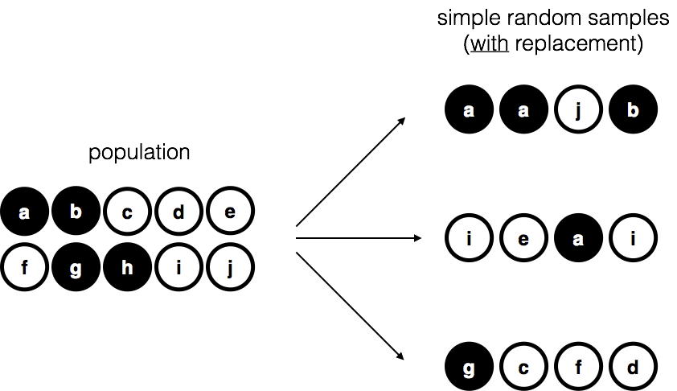
Most psychology experiments tend to be sampling without replacement, because the same person is not allowed to participate in the experiment twice. However, most statistical theory is based on the assumption that the data arise from a simple random sample with replacement. In real life, this very rarely matters. If the population of interest is large (e.g., has more than 10 entities!) the difference between sampling with- and without- replacement is too small to be concerned with. The difference between simple random samples and biased samples, on the other hand, is not such an easy thing to dismiss.
4.9.3 Most samples are not simple random samples
As you can see from looking at the list of possible populations that I showed above, it is almost impossible to obtain a simple random sample from most populations of interest. When I run experiments, I’d consider it a minor miracle if my participants turned out to be a random sampling of the undergraduate psychology students at Adelaide university, even though this is by far the narrowest population that I might want to generalize to. A thorough discussion of other types of sampling schemes is beyond the scope of this book, but to give you a sense of what’s out there I’ll list a few of the more important ones:
Stratified sampling. Suppose your population is (or can be) divided into several different sub-populations, or strata. Perhaps you’re running a study at several different sites, for example. Instead of trying to sample randomly from the population as a whole, you instead try to collect a separate random sample from each of the strata. Stratified sampling is sometimes easier to do than simple random sampling, especially when the population is already divided into the distinct strata. It can also be more efficient that simple random sampling, especially when some of the sub-populations are rare. For instance, when studying schizophrenia it would be much better to divide the population into two strata (schizophrenic and not-schizophrenic), and then sample an equal number of people from each group. If you selected people randomly, you would get so few schizophrenic people in the sample that your study would be useless. This specific kind of of stratified sampling is referred to as oversampling because it makes a deliberate attempt to over-represent rare groups.
Snowball sampling is a technique that is especially useful when sampling from a “hidden” or hard to access population, and is especially common in social sciences. For instance, suppose the researchers want to conduct an opinion poll among transgender people. The research team might only have contact details for a few trans folks, so the survey starts by asking them to participate (stage 1). At the end of the survey, the participants are asked to provide contact details for other people who might want to participate. In stage 2, those new contacts are surveyed. The process continues until the researchers have sufficient data. The big advantage to snowball sampling is that it gets you data in situations that might otherwise be impossible to get any. On the statistical side, the main disadvantage is that the sample is highly non-random, and non-random in ways that are difficult to address. On the real life side, the disadvantage is that the procedure can be unethical if not handled well, because hidden populations are often hidden for a reason. I chose transgender people as an example here to highlight this: if you weren’t careful you might end up outing people who don’t want to be outed (very, very bad form), and even if you don’t make that mistake it can still be intrusive to use people’s social networks to study them. It’s certainly very hard to get people’s informed consent before contacting them, yet in many cases the simple act of contacting them and saying “hey we want to study you” can be hurtful. Social networks are complex things, and just because you can use them to get data doesn’t always mean you should.
Convenience sampling is more or less what it sounds like. The samples are chosen in a way that is convenient to the researcher, and not selected at random from the population of interest. Snowball sampling is one type of convenience sampling, but there are many others. A common example in psychology are studies that rely on undergraduate psychology students. These samples are generally non-random in two respects: firstly, reliance on undergraduate psychology students automatically means that your data are restricted to a single sub-population. Secondly, the students usually get to pick which studies they participate in, so the sample is a self selected subset of psychology students not a randomly selected subset. In real life, most studies are convenience samples of one form or another. This is sometimes a severe limitation, but not always.
4.9.4 How much does it matter if you don’t have a simple random sample?
Okay, so real world data collection tends not to involve nice simple random samples. Does that matter? A little thought should make it clear to you that it can matter if your data are not a simple random sample: just think about the difference between Figure 4.5 and Figure 4.6. However, it’s not quite as bad as it sounds. Some types of biased samples are entirely unproblematic. For instance, when using a stratified sampling technique you actually know what the bias is because you created it deliberately, often to increase the effectiveness of your study, and there are statistical techniques that you can use to adjust for the biases you’ve introduced (not covered in this book!). So in those situations it’s not a problem.
More generally though, it’s important to remember that random sampling is a means to an end, not the end in itself. Let’s assume you’ve relied on a convenience sample, and as such you can assume it’s biased. A bias in your sampling method is only a problem if it causes you to draw the wrong conclusions. When viewed from that perspective, I’d argue that we don’t need the sample to be randomly generated in every respect: we only need it to be random with respect to the psychologically-relevant phenomenon of interest. Suppose I’m doing a study looking at working memory capacity. In study 1, I actually have the ability to sample randomly from all human beings currently alive, with one exception: I can only sample people born on a Monday. In study 2, I am able to sample randomly from the Australian population. I want to generalize my results to the population of all living humans. Which study is better? The answer, obviously, is study 1. Why? Because we have no reason to think that being “born on a Monday” has any interesting relationship to working memory capacity. In contrast, I can think of several reasons why “being Australian” might matter. Australia is a wealthy, industrialized country with a very well-developed education system. People growing up in that system will have had life experiences much more similar to the experiences of the people who designed the tests for working memory capacity. This shared experience might easily translate into similar beliefs about how to “take a test”, a shared assumption about how psychological experimentation works, and so on. These things might actually matter. For instance, “test taking” style might have taught the Australian participants how to direct their attention exclusively on fairly abstract test materials relative to people that haven’t grown up in a similar environment; leading to a misleading picture of what working memory capacity is.
There are two points hidden in this discussion. Firstly, when designing your own studies, it’s important to think about what population you care about, and try hard to sample in a way that is appropriate to that population. In practice, you’re usually forced to put up with a “sample of convenience” (e.g., psychology lecturers sample psychology students because that’s the least expensive way to collect data, and our coffers aren’t exactly overflowing with gold), but if so you should at least spend some time thinking about what the dangers of this practice might be.
Secondly, if you’re going to criticize someone else’s study because they’ve used a sample of convenience rather than laboriously sampling randomly from the entire human population, at least have the courtesy to offer a specific theory as to how this might have distorted the results. Remember, everyone in science is aware of this issue, and does what they can to alleviate it. Merely pointing out that “the study only included people from group BLAH” is entirely unhelpful, and borders on being insulting to the researchers, who are aware of the issue. They just don’t happen to be in possession of the infinite supply of time and money required to construct the perfect sample. In short, if you want to offer a responsible critique of the sampling process, then be helpful. Rehashing the blindingly obvious truisms that I’ve been rambling on about in this section isn’t helpful.
4.9.5 Population parameters and sample statistics
Okay. Setting aside the thorny methodological issues associated with obtaining a random sample, let’s consider a slightly different issue. Up to this point we have been talking about populations the way a scientist might. To a psychologist, a population might be a group of people. To an ecologist, a population might be a group of bears. In most cases the populations that scientists care about are concrete things that actually exist in the real world.
Statisticians, however, are a funny lot. On the one hand, they are interested in real world data and real science in the same way that scientists are. On the other hand, they also operate in the realm of pure abstraction in the way that mathematicians do. As a consequence, statistical theory tends to be a bit abstract in how a population is defined. In much the same way that psychological researchers operationalize our abstract theoretical ideas in terms of concrete measurements, statisticians operationalize the concept of a “population” in terms of mathematical objects that they know how to work with. You’ve already come across these objects they’re called probability distributions (remember, the place where data comes from).
The idea is quite simple. Let’s say we’re talking about IQ scores. To a psychologist, the population of interest is a group of actual humans who have IQ scores. A statistician “simplifies” this by operationally defining the population as the probability distribution depicted in Figure 4.8 \(a\).
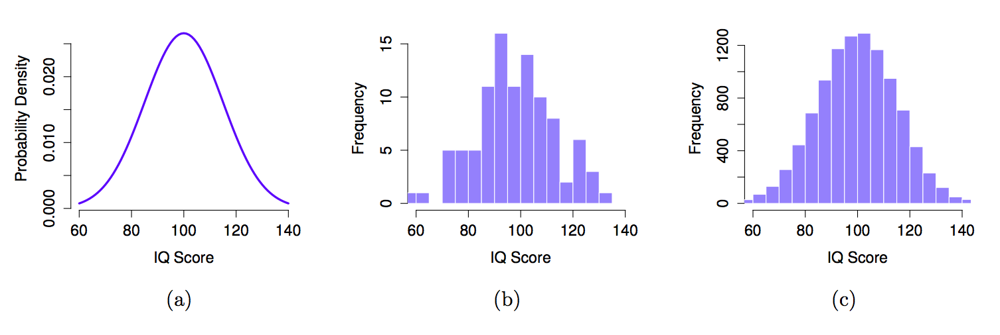
IQ tests are designed so that the average IQ is 100, the standard deviation of IQ scores is 15, and the distribution of IQ scores is normal. These values are referred to as the population parameters because they are characteristics of the entire population. That is, we say that the population mean \(\mu\) is 100, and the population standard deviation \(\sigma\) is 15.
Now suppose we collect some data. We select 100 people at random and administer an IQ test, giving a simple random sample from the population. The sample would consist of a collection of numbers like this:
106 101 98 80 74 ... 107 72 100
Each of these IQ scores is sampled from a normal distribution with mean 100 and standard deviation 15. So if I plot a histogram of the sample, I get something like the one shown in Figure 4.8 \(b\). As you can see, the histogram is roughly the right shape, but it’s a very crude approximation to the true population distribution shown in Figure 4.8 \(a\). The mean of the sample is fairly close to the population mean 100 but not identical. In this case, it turns out that the people in the sample have a mean IQ of 98.5, and the standard deviation of their IQ scores is 15.9. These sample statistics are properties of the data set, and although they are fairly similar to the true population values, they are not the same. In general, sample statistics are the things you can calculate from your data set, and the population parameters are the things you want to learn about. Later on in this chapter we’ll talk about how you can estimate population parameters using your sample statistics and how to work out how confident you are in your estimates but before we get to that there’s a few more ideas in sampling theory that you need to know about.
4.10 The law of large numbers
We just looked at the results of one fictitious IQ experiment with a sample size of \(N=100\). The results were somewhat encouraging: the true population mean is 100, and the sample mean of 98.5 is a pretty reasonable approximation to it. In many scientific studies that level of precision is perfectly acceptable, but in other situations you need to be a lot more precise. If we want our sample statistics to be much closer to the population parameters, what can we do about it?
The obvious answer is to collect more data. Suppose that we ran a much larger experiment, this time measuring the IQ’s of 10,000 people. We can simulate the results of this experiment using R, using the rnorm() function, which generates random numbers sampled from a normal distribution. For an experiment with a sample size of n = 10000, and a population with mean = 100 and sd = 15, R produces our fake IQ data using these commands:
IQ <- rnorm(n=10000, mean=100, sd=15) #generate IQ scores
IQ <- round(IQ) # make round numbersCool, we just generated 10,000 fake IQ scores. Where did they go? Well, they went into the variable IQ on my computer. You can do the same on your computer too by copying the above code. 10,000 numbers is too many numbers to look at. We can look at the first 100 like this:
print(IQ[1:100])
#> [1] 115 79 90 89 112 108 96 101 87 71 93 86 93 103 93 101 81 91
#> [19] 77 103 104 92 86 97 79 95 126 89 99 84 112 108 92 78 109 113
#> [37] 109 86 88 116 102 87 108 96 99 90 85 95 92 110 121 77 89 106
#> [55] 98 77 116 126 103 104 113 89 118 85 111 95 118 92 94 87 105 101
#> [73] 96 114 105 78 90 83 107 83 92 115 96 85 117 97 60 97 92 121
#> [91] 118 109 125 71 111 84 124 95 90 102We can compute the mean IQ using the command mean(IQ) and the standard deviation using the command sd(IQ), and draw a histogram using hist(). The histogram of this much larger sample is shown in Figure @ref(fig:IQdist)c. Even a moment’s inspections makes clear that the larger sample is a much better approximation to the true population distribution than the smaller one. This is reflected in the sample statistics: the mean IQ for the larger sample turns out to be 99.9, and the standard deviation is 15.1. These values are now very close to the true population.
I feel a bit silly saying this, but the thing I want you to take away from this is that large samples generally give you better information. I feel silly saying it because it’s so bloody obvious that it shouldn’t need to be said. In fact, it’s such an obvious point that when Jacob Bernoulli – one of the founders of probability theory – formalized this idea back in 1713, he was kind of a jerk about it. Here’s how he described the fact that we all share this intuition:
For even the most stupid of men, by some instinct of nature, by himself and without any instruction (which is a remarkable thing), is convinced that the more observations have been made, the less danger there is of wandering from one’s goal (see Stigler, 1986, p65).
Okay, so the passage comes across as a bit condescending (not to mention sexist), but his main point is correct: it really does feel obvious that more data will give you better answers. The question is, why is this so? Not surprisingly, this intuition that we all share turns out to be correct, and statisticians refer to it as the law of large numbers. The law of large numbers is a mathematical law that applies to many different sample statistics, but the simplest way to think about it is as a law about averages. The sample mean is the most obvious example of a statistic that relies on averaging (because that’s what the mean is… an average), so let’s look at that. When applied to the sample mean, what the law of large numbers states is that as the sample gets larger, the sample mean tends to get closer to the true population mean. Or, to say it a little bit more precisely, as the sample size “approaches” infinity (written as \(N \rightarrow \infty\)) the sample mean approaches the population mean (\(\bar{X} \rightarrow \mu\)).
I don’t intend to subject you to a proof that the law of large numbers is true, but it’s one of the most important tools for statistical theory. The law of large numbers is the thing we can use to justify our belief that collecting more and more data will eventually lead us to the truth. For any particular data set, the sample statistics that we calculate from it will be wrong, but the law of large numbers tells us that if we keep collecting more data those sample statistics will tend to get closer and closer to the true population parameters.
4.11 Sampling distributions and the central limit theorem
The law of large numbers is a very powerful tool, but it’s not going to be good enough to answer all our questions. Among other things, all it gives us is a “long run guarantee”. In the long run, if we were somehow able to collect an infinite amount of data, then the law of large numbers guarantees that our sample statistics will be correct. But as John Maynard Keynes famously argued in economics, a long run guarantee is of little use in real life:
[**The] long run is a misleading guide to current affairs. In the long run we are all dead. Economists set themselves too easy, too useless a task, if in tempestuous seasons they can only tell us, that when the storm is long past, the ocean is flat again.** Keynes (1923, 80)
As in economics, so too in psychology and statistics. It is not enough to know that we will eventually arrive at the right answer when calculating the sample mean. Knowing that an infinitely large data set will tell me the exact value of the population mean is cold comfort when my actual data set has a sample size of \(N=100\). In real life, then, we must know something about the behavior of the sample mean when it is calculated from a more modest data set!
4.11.1 Sampling distribution of the sample means
“Oh no, what is the sample distribution of the sample means? Is that even allowed in English?”. Yes, unfortunately, this is allowed. The sampling distribution of the sample means is the next most important thing you will need to understand. IT IS SO IMPORTANT THAT IT IS NECESSARY TO USE ALL CAPS. It is only confusing at first because it’s long and uses sampling and sample in the same phrase.
Don’t worry, we’ve been prepping you for this. You know what a distribution is right? It’s where numbers comes from. It makes some numbers occur more or less frequently, or the same as other numbers. You know what a sample is right? It’s the numbers we take from a distribution. So, what could the sampling distribution of the sample means refer to?
First, what do you think the sample means refers to? Well, if you took a sample of numbers, you would have a bunch of numbers…then, you could compute the mean of those numbers. The sample mean is the mean of the numbers in the sample. That is all. So, what is this distribution you speak of? Well, what if you took a bunch of samples, put one here, put one there, put some other ones other places. You have a lot of different samples of numbers. You could compute the mean for each them. Then you would have a bunch of means. What do those means look like? Well, if you put them in a histogram, you could find out. If you did that, you would be looking at (roughly) a distribution, AKA the sampling distribution of the sample means.
“I’m following along sort of, why would I want to do this instead of watching Netflix…”. Because, the sampling distribution of the sample means gives you another window into chance. A very useful one that you can control, just like your remote control, by pressing the right design buttons.
4.11.2 Seeing the pieces
To make a sampling distribution of the sample means, we just need the following:
- A distribution to take numbers from
- A bunch of different samples from the distribution
- The means of each of the samples
- Get all of the sample means, and plot them in a histogram
Question for yourself: What do you think the sampling distribution of the sample means will look like? Will it tend to look the shape of the distribution that the samples came from? Or not? Good question, think about it.
Let’s do those four things. We will sample numbers from the uniform distribution. Figure 4.9 shows the uniform distribution for sampling the set of integers from 1 to 10:
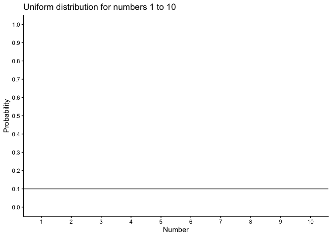
Figure 4.10 animates the process of taking a bunch of samples from the uniform distribution. We will set our sample-size to 20. It’s easier to see how the sample mean behaves in a movie. Each histogram shows a new sample. The red line shows where the mean of the sample is. The samples are all very different from each other, but the red line doesn’t move around very much, it always stays near the middle. However, the red line does move around a little bit, and this variance is what we call the sampling distribution of the sample mean.
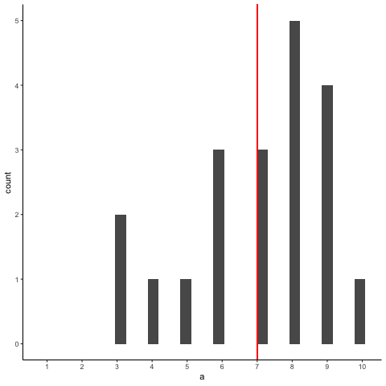
OK, what have we got here? We have an animation of 10 different samples. Each sample has 20 observations and these are summarized in each of histograms that show up in the animation. Each histogram has a red line. The red line shows you where the mean of each sample is located. So, we have found the sample means for the 10 different samples from a uniform distribution.
First question. Are the sample means all the same? The answer is no. They are all kind of similar to each other though, they are all around five plus or minus a few numbers. This is interesting. Although all of our samples look pretty different from one another, the means of our samples look more similar than different.
Second question. What should we do with the means of our samples? Well, how about we collect them them all, and then plot a histogram of them. This would allow us to see what the distribution of the sample means looks like. The next histogram is just this. Except, rather than taking 10 samples, we will take 10,000 samples. For each of them we will compute the means. So, we will have 10,000 means. Figure 4.11 shows the histogram of the sample means:

“Wait what? This doesn’t look right. I thought we were taking samples from a uniform distribution. Uniform distributions are flat. THIS DOES NOT LOOK LIKE A FLAT DISTRIBTUION, WHAT IS GOING ON, AAAAAGGGHH.”. We feel your pain.
Remember, we are looking at the distribution of sample means. It is indeed true that the distribution of sample means does not look the same as the distribution we took the samples from. Our distribution of sample means goes up and down. In fact, this will almost always be the case for distributions of sample means. This fact is called the central limit theorem, which we talk about later.
For now, let’s talk about about what’s happening. Remember, we have been sampling numbers between the range 1 to 10. We are supposed to get each number with roughly equal frequency, because we are sampling from a uniform distribution. So, let’s say we took a sample of 10 numbers, and happened to get one of each from 1 to 10.
1 2 3 4 5 6 7 8 9 10
What is the mean of those numbers? Well, its 1+2+3+4+5+6+7+8+9+10 = 55 / 10 = 5.5. Imagine if we took a bigger sample, say of 20 numbers, and again we got exactly 2 of each number. What would the mean be? It would be (1+2+3+4+5+6+7+8+9+10)*2 = 110 / 20 = 5.5. Still 5.5. You can see here, that the mean value of our uniform distribution is 5.5. Now that we know this, we might expect that most of our samples will have a mean near this number. We already know that every sample won’t be perfect, and it won’t have exactly an equal amount of every number. So, we will expect the mean of our samples to vary a little bit. The histogram that we made shows the variation. Not surprisingly, the numbers vary around the value 5.5.
4.11.3 Sampling distributions exist for any sample statistic!
One thing to keep in mind when thinking about sampling distributions is that any sample statistic you might care to calculate has a sampling distribution. For example, suppose that each time you sampled some numbers from an experiment you wrote down the largest number in the experiment. Doing this over and over again would give you a very different sampling distribution, namely the sampling distribution of the maximum. You could calculate the smallest number, or the mode, or the median, of the variance, or the standard deviation, or anything else from your sample. Then, you could repeat many times, and produce the sampling distribution of those statistics. Neat!
Just for fun here are some different sampling distributions for different statistics. We will take a normal distribution with mean = 100, and standard deviation =20. Then, we’ll take lots of samples with n = 50 (50 observations per sample). We’ll save all of the sample statistics, then plot their histograms in Figure 4.12. Let’s do it:

We just computed 4 different sampling distributions, for the mean, standard deviation, maximum value, and the median. If you just look quickly at these histograms you might think they all basically look the same. Hold up now. It’s very important to look at the x-axes. They are different. For example, the sample mean goes from about 90 to 110, whereas the standard deviation goes from 15 to 25.
These sampling distributions are super important, and worth thinking about. What should you think about? Well, here’s a clue. These distributions are telling you what to expect from your sample. Critically, they are telling you what you should expect from a sample, when you take one from the specific distribution that we used (normal distribution with mean =100 and SD = 20). What have we learned. We’ve learned a tonne. We’ve learned that we can expect our sample to have a mean somewhere between 90 and 108ish. Notice, the sample means are never more extreme. We’ve learned that our sample will usually have some variance, and that the the standard deviation will be somewhere between 15 and 25 (never much more extreme than that). We can see that sometime we get some big numbers, say between 120 and 180, but not much bigger than that. And, we can see that the median is pretty similar to the mean. If you ever took a sample of 50 numbers, and your descriptive statistics were inside these windows, then perhaps they came from this kind of normal distribution. If your sample statistics are very different, then your sample probably did not come this distribution. By using simulation, we can find out what samples look like when they come from distributions, and we can use this information to make inferences about whether our sample came from particular distributions.
4.12 The central limit theorem
OK, so now you’ve seen lots of sampling distributions, and you know what the sampling distribution of the mean is. Here, we’ll focus on how the sampling distribution of the mean changes as a function of sample size.
Intuitively, you already know part of the answer: if you only have a few observations, the sample mean is likely to be quite inaccurate (you’ve already seen it bounce around): if you replicate a small experiment and recalculate the mean you’ll get a very different answer. In other words, the sampling distribution is quite wide. If you replicate a large experiment and recalculate the sample mean you’ll probably get the same answer you got last time, so the sampling distribution will be very narrow.
Let’s give ourselves a nice movie to see everything in action. We’re going to sample numbers from a normal distribution. Figure 4.13 has four panels, each panel represents a different sample size (n), including sample-sizes of 10, 50, 100, and 1000. The red line shows the shape of the normal distribution. The grey bars show a histogram of each of the samples that we take. The red line shows the mean of an individual sample (the middle of the grey bars). As you can see, the red line moves around a lot, especially when the sample size is small (10).
The new bits are the blue bars and the blue lines. The blue bars represent the sampling distribution of the sample mean. For example, in the panel for sample-size 10, we see a bunch of blue bars. This is a histogram of 10 sample means, taken from 10 samples of size 10. In the 50 panel, we see a histogram of 50 sample means, taken from 50 samples of size 50, and so on. The blue line in each panel is the mean of the sample means (“aaagh, it’s a mean of means”, yes it is).

What should you notice? Notice that the range of the blue bars shrinks as sample size increases. The sampling distribution of the mean is quite wide when the sample-size is 10, it narrows as sample-size increases to 50 and 100, and it’s just one bar, right in the middle when sample-size goes to 1000. What we are seeing is that the mean of the sampling distribution approaches the mean of the population as sample-size increases.
So, the sampling distribution of the mean is another distribution, and it has some variance. It varies more when sample-size is small, and varies less when sample-size is large. We can quantify this effect by calculating the standard deviation of the sampling distribution, which is referred to as the standard error. The standard error of a statistic is often denoted SE, and since we’re usually interested in the standard error of the sample mean, we often use the acronym SEM. As you can see just by looking at the movie, as the sample size \(N\) increases, the SEM decreases.
Okay, so that’s one part of the story. However, there’s something we’ve been glossing over a little bit. We’ve seen it already, but it’s worth looking at it one more time. Here’s the thing: no matter what shape your population distribution is, as \(N\) increases the sampling distribution of the mean starts to look more like a normal distribution. This is the central limit theorem.
To see the central limit theorem in action, we are going to look at some histograms of sample means from different kinds of distributions. It is very important to recognize that you are looking at distributions of sample means, not distributions of individual samples.
Here we go, Figure 4.14 shows sampling from a normal distribution. The red line is the normal distribution where each sample is drawn from. The mean for each sample of numbers is computed, and the distribution of sample means is shown by the blue bars. Note that the shape of red line and the blue bars are similar, they both look like a normal distribution.
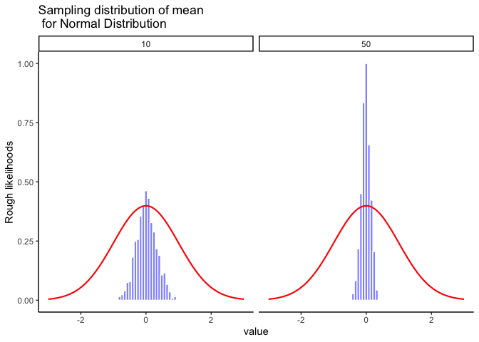
Let’s do it again. This time we will sample from a flat uniform distribution shown by the red line. However, Figure 4.15 shows the distribution of sample means represented by the blue bars is not flat, it looks like a normal distribution.
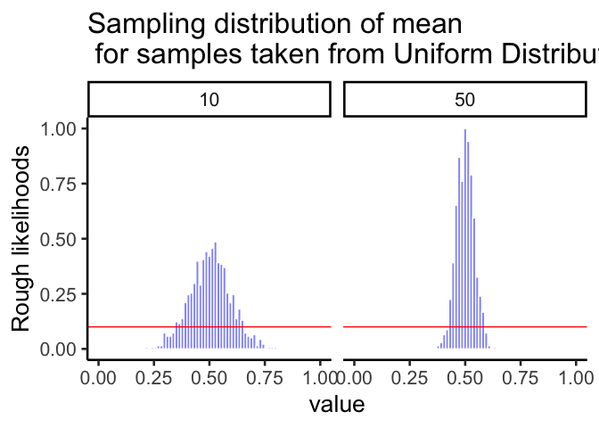
One more time with an exponential distribution (shown in red) where smaller numbers are more likely to be sampled than larger numbers. Even though way more of the numbers in a given sample will be smaller than larger, according to Figure 4.16 the sampling distribution of the mean does not look the red line. Instead, the sampling distribution of the mean looks like a bell-shaped normal curve. This is the central limit theorem in action.
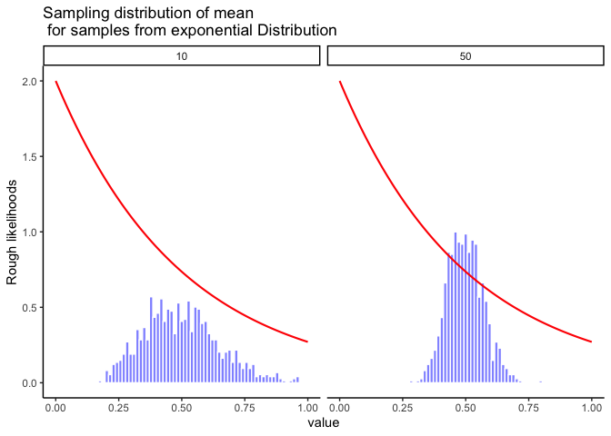
On the basis of these figures, it seems like we have evidence for all of the following claims about the sampling distribution of the mean:
The mean of the sampling distribution is the same as the mean of the population
The standard deviation of the sampling distribution (i.e., the standard error) gets smaller as the sample size increases
The shape of the sampling distribution becomes normal as the sample size increases
As it happens, not only are all of these statements true, there is a very famous theorem in statistics that proves all three of them, known as the central limit theorem. Among other things, the central limit theorem tells us that if the population distribution has mean \(\mu\) and standard deviation \(\sigma\), then the sampling distribution of the mean also has mean \(\mu\), and the standard error of the mean is \[\mbox{SEM} = \frac{\sigma}{ \sqrt{N} }\] Because we divide the population standard deviation \(\sigma\) by the square root of the sample size \(N\), the SEM gets smaller as the sample size increases. It also tells us that the shape of the sampling distribution becomes normal.
This result is useful for all sorts of things. It tells us why large experiments are more reliable than small ones, and because it gives us an explicit formula for the standard error it tells us how much more reliable a large experiment is. It tells us why the normal distribution is, well, normal. In real experiments, many of the things that we want to measure are actually averages of lots of different quantities (e.g., arguably, “general” intelligence as measured by IQ is an average of a large number of “specific” skills and abilities), and when that happens, the averaged quantity should follow a normal distribution. Because of this mathematical law, the normal distribution pops up over and over again in real data.
4.13 z-scores
We are now in a position to combine some of things we’ve been talking about in this chapter, and introduce you to a new tool, z-scores. It turns out we won’t use z-scores very much in this textbook. However, you can’t take a class on statistics and not learn about z-scores.
We are going to look at a normal distribution in Figure 4.17, and draw lines through the distribution at 0, +/- 1, +/-2, and +/- 3 standard deviations from the mean:
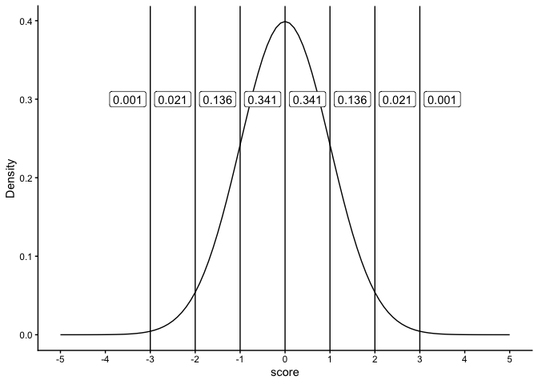
The figure shows a normal distribution with mean = 0, and standard deviation = 1. We’ve drawn lines at each of the standard deviations: -3, -2, -1, 0, 1, 2, and 3. We also show some numbers in the labels, in between each line. These numbers are proportions. For example, we see the proportion is .341 for scores that fall between the range 0 and 1. Scores between 0 and 1 occur 34.1% of the time. Scores in between -1 and 1, occur 68.2% of the time, that’s more than half of the scores. Scores between 1 and occur about 13.6% of the time, and scores between 2 and 3 occur even less, only 2.1% of the time.
Normal distributions always have these properties, even when they have different means and standard deviations. For example, take a look at the normal distribution in Figure 4.18 that has a mean = 100, and standard deviation = 25.
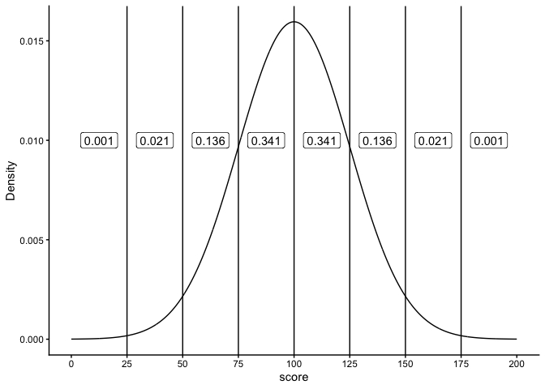
Now we are looking at a normal distribution with mean = 100 and standard deviation = 25. Notice that the region between 100 and 125 contains 34.1% of the scores. This region is 1 standard deviation away from the mean (the standard deviation is 25, the mean is 100, so 25 is one whole standard deviation away from 100). As you can see, the very same proportions occur between each of the standard deviations, as they did when our standard deviation was set to 1 (with a mean of 0).
4.13.1 Idea behind z-scores
Sometimes it can be convenient to transform your original scores into different scores that are easier to work with. For example, if you have a bunch of proportions, like .3, .5, .6, .7, you might want to turn them into percentages like 30%, 50%, 60%, and 70%. To do that you multiply the proportions by a constant of 100. If you want to turn percentages back into proportions, you divide by a constant of 100. This kind of transformation just changes the scale of the numbers from between 0-1, and between 0-100. Otherwise, the pattern in the numbers stays the same.
The idea behind z-scores is a similar kind of transformation. The idea is to express each raw score in terms of it’s standard deviation. For example, if I told you I got a 75% on test, you wouldn’t know how well I did compared to the rest of the class. But, if I told you that I scored 2 standard deviations above the mean, you’d know I did quite well compared to the rest of the class, because you know that most scores (if they are distributed normally) fall below 2 standard deviations of the mean.
We also know, now thanks to the central limit theorem, that many of our measures, such as sample means, will be distributed normally. So, it can often be desirable to express the raw scores in terms of their standard deviations.
Let’s see how this looks in a table without showing you any formulas. We will look at some scores that come from a normal distribution with mean = 100, and standard deviation = 25. We will list some raw scores, along with the z-scores
| raw | z |
|---|---|
| 25 | -3 |
| 50 | -2 |
| 75 | -1 |
| 100 | 0 |
| 125 | 1 |
| 150 | 2 |
| 175 | 3 |
Remember, the mean is 100, and the standard deviation is 25. How many standard deviations away from the mean is a score of 100? The answer is 0, it’s right on the mean. You can see the z-score for 100, is 0. How many standard deviations is 125 away from the mean? Well the standard deviation is 25, 125 is one whole 25 away from 100, that’s a total of 1 standard deviation, so the z-score for 125 is 1. The z-score for 150 is 2, because 150 is two 25s away from 100. The z-score for 50 is -2, because 50 is two 25s away from 100 in the opposite direction. All we are doing here is re-expressing the raw scores in terms of how many standard deviations they are from the mean. Remember, the mean is always right on target, so the center of the z-score distribution is always 0.
4.13.2 Calculating z-scores
To calculate z-scores all you have to do is figure out how many standard deviations from the mean each number is. Let’s say the mean is 100, and the standard deviation is 25. You have a score of 97. How many standard deviations from the mean is 97?
First compute the difference between the score and the mean:
\(97-100 = -3\)
Alright, we have a total difference of -3. How many standard deviations does -3 represent if 1 standard deviation is 25? Clearly -3 is much smaller than 25, so it’s going to be much less than 1. To figure it out, just divide -3 by the standard deviation.
\(\frac{-3}{25} = -.12\)
Our z-score for 97 is -.12.
Here’s the general formula:
\(z = \frac{\text{raw score} - \text{mean}}{\text{standard deviation}}\)
So, for example if we had these 10 scores from a normal distribution with mean = 100, and standard deviation =25
#> [1] 121.36 48.69 91.69 46.76 114.57 116.07 133.11 78.14 104.95 73.26The z-scores would be:
#> [1] 0.8544 -2.0524 -0.3324 -2.1296 0.5828 0.6428 1.3244 -0.8744 0.1980
#> [10] -1.0696Once you have the z-scores, you could use them as another way to describe your data. For example, now just by looking at a score you know if it is likely or unlikely to occur, because you know how the area under the normal curve works. z-scores between -1 and 1 happen pretty often, scores greater than 1 or -1 still happen fairly often, but not as often. And, scores bigger than 2 or -2 don’t happen very often. This is a convenient thing to do if you want to look at your numbers and get a general sense of how often they happen.
Usually you do not know the mean or the standard deviation of the population that you are drawing your sample scores from. So, you could use the mean and standard deviation of your sample as an estimate, and then use those to calculate z-scores.
Finally, z-scores are also called standardized scores, because each raw score is described in terms of it’s standard deviation. This may well be the last time we talk about z-scores in this book. You might wonder why we even bothered telling you about them. First, it’s worth knowing they are a thing. Second, they become important as your statistical prowess becomes more advanced. Third, some statistical concepts, like correlation, can be re-written in terms of z-scores, and this illuminates aspects of those statistics. Finally, they are super useful when you are dealing with a normal distribution that has a known mean and standard deviation.
4.14 Estimating population parameters
Let’s pause for a moment to get our bearings. We’re about to go into the topic of estimation. What is that, and why should you care? First, population parameters are things about a distribution. For example, distributions have means. The mean is a parameter of the distribution. The standard deviation of a distribution is a parameter. Anything that can describe a distribution is a potential parameter.
OK fine, who cares? This I think, is a really good question. There are some good concrete reasons to care. And there are some great abstract reasons to care. Unfortunately, most of the time in research, it’s the abstract reasons that matter most, and these can be the most difficult to get your head around.
4.14.1 Concrete population parameters
First some concrete reasons. There are real populations out there, and sometimes you want to know the parameters of them. For example, if you are a shoe company, you would want to know about the population parameters of feet size. As a first pass, you would want to know the mean and standard deviation of the population. If your company knew this, and other companies did not, your company would do better (assuming all shoes are made equal). Why would your company do better, and how could it use the parameters? Here’s one good reason. As a shoe company you want to meet demand with the right amount of supply. If you make too many big or small shoes, and there aren’t enough people to buy them, then you’re making extra shoes that don’t sell. If you don’t make enough of the most popular sizes, you’ll be leaving money on the table. Right? Yes. So, what would be an optimal thing to do? Perhaps, you would make different amounts of shoes in each size, corresponding to how the demand for each shoe size. You would know something about the demand by figuring out the frequency of each size in the population. You would need to know the population parameters to do this.
Fortunately, it’s pretty easy to get the population parameters without measuring the entire population. Who has time to measure every-bodies feet? Nobody, that’s who. Instead, you would just need to randomly pick a bunch of people, measure their feet, and then measure the parameters of the sample. If you take a big enough sample, we have learned that the sample mean gives a very good estimate of the population mean. We will learn shortly that a version of the standard deviation of the sample also gives a good estimate of the standard deviation of the population. Perhaps shoe-sizes have a slightly different shape than a normal distribution. Here too, if you collect a big enough sample, the shape of the distribution of the sample will be a good estimate of the shape of the populations. All of these are good reasons to care about estimating population parameters. But, do you run a shoe company? Probably not.
4.14.2 Abstract population parameters
Even when we think we are talking about something concrete in Psychology, it often gets abstract right away. Instead of measuring the population of feet-sizes, how about the population of human happiness. We all think we know what happiness is, everyone has more or less of it, there are a bunch of people, so there must be a population of happiness right? Perhaps, but it’s not very concrete. The first problem is figuring out how to measure happiness. Let’s use a questionnaire. Consider these questions:
How happy are you right now on a scale from 1 to 7? How happy are you in general on a scale from 1 to 7? How happy are you in the mornings on a scale from 1 to 7? How happy are you in the afternoons on a scale from 1 to 7?
- = very unhappy
- = unhappy
- = sort of unhappy
- = in the middle
- = sort of happy
- = happy
- = very happy
Forget about asking these questions to everybody in the world. Let’s just ask them to lots of people (our sample). What do you think would happen? Well, obviously people would give all sorts of answers right. We could tally up the answers and plot them in a histogram. This would show us a distribution of happiness scores from our sample. “Great, fantastic!”, you say. Yes, fine and dandy.
So, on the one hand we could say lots of things about the people in our sample. We could say exactly who says they are happy and who says they aren’t, after all they just told us!
But, what can we say about the larger population? Can we use the parameters of our sample (e.g., mean, standard deviation, shape etc.) to estimate something about a larger population. Can we infer how happy everybody else is, just from our sample? HOLD THE PHONE.
4.14.2.1 Complications with inference
Before listing a bunch of complications, let me tell you what I think we can do with our sample. Provided it is big enough, our sample parameters will be a pretty good estimate of what another sample would look like. Because of the following discussion, this is often all we can say. But, that’s OK, as you see throughout this book, we can work with that!
Problem 1: Multiple populations: If you looked at a large sample of questionnaire data you will find evidence of multiple distributions inside your sample. People answer questions differently. Some people are very cautious and not very extreme. Their answers will tend to be distributed about the middle of the scale, mostly 3s, 4s, and 5s. Some people are very bi-modal, they are very happy and very unhappy, depending on time of day. These people’s answers will be mostly 1s and 2s, and 6s and 7s, and those numbers look like they come from a completely different distribution. Some people are entirely happy or entirely unhappy. Again, these two “populations” of people’s numbers look like two different distributions, one with mostly 6s and 7s, and one with mostly 1s and 2s. Other people will be more random, and their scores will look like a uniform distribution. So, is there a single population with parameters that we can estimate from our sample? Probably not. Could be a mixture of lots of populations with different distributions.
Problem 2: What do these questions measure?: If the whole point of doing the questionnaire is to estimate the population’s happiness, we really need wonder if the sample measurements actually tell us anything about happiness in the first place. Some questions: Are people accurate in saying how happy they are? Does the measure of happiness depend on the scale, for example, would the results be different if we used 0-100, or -100 to +100, or no numbers? Does the measure of happiness depend on the wording in the question? Does a measure like this one tell us everything we want to know about happiness (probably not), what is it missing (who knows? probably lots). In short, nobody knows if these kinds of questions measure what we want them to measure. We just hope that they do. Instead, we have a very good idea of the kinds of things that they actually measure. It’s really quite obvious, and staring you in the face. Questionnaire measurements measure how people answer questionnaires. In other words, how people behave and answer questions when they are given a questionnaire. This might also measure something about happiness, when the question has to do about happiness. But, it turns out people are remarkably consistent in how they answer questions, even when the questions are total nonsense, or have no questions at all (just numbers to choose!) Maul (2017).
The take home complications here are that we can collect samples, but in Psychology, we often don’t have a good idea of the populations that might be linked to these samples. There might be lots of populations, or the populations could be different depending on who you ask. Finally, the “population” might not be the one you want it to be.
4.14.3 Experiments and Population parameters
OK, so we don’t own a shoe company, and we can’t really identify the population of interest in Psychology, can’t we just skip this section on estimation? After all, the “population” is just too weird and abstract and useless and contentious. HOLD THE PHONE AGAIN!
It turns out we can apply the things we have been learning to solve lots of important problems in research. These allow us to answer questions with the data that we collect. Parameter estimation is one of these tools. We just need to be a little bit more creative, and a little bit more abstract to use the tools.
Here is what we know already. The numbers that we measure come from somewhere, we have called this place “distributions”. Distributions control how the numbers arrive. Some numbers happen more than others depending on the distribution. We assume, even if we don’t know what the distribution is, or what it means, that the numbers came from one. Second, when get some numbers, we call it a sample. This entire chapter so far has taught you one thing. When your sample is big, it resembles the distribution it came from. And, when your sample is big, it will resemble very closely what another big sample of the same thing will look like. We can use this knowledge!
Very often as Psychologists what we want to know is what causes what. We want to know if X causes something to change in Y. Does eating chocolate make you happier? Does studying improve your grades? There a bazillions of these kinds of questions. And, we want answers to them.
I’ve been trying to be mostly concrete so far in this textbook, that’s why we talk about silly things like chocolate and happiness, at least they are concrete. Let’s give a go at being abstract. We can do it.
So, we want to know if X causes Y to change. What is X? What is Y? X is something you change, something you manipulate, the independent variable. Y is something you measure. So, we will be taking samples from Y. “Oh I get it, we’ll take samples from Y, then we can use the sample parameters to estimate the population parameters of Y!” NO, not really, but yes sort of. We will take sample from Y, that is something we absolutely do. In fact, that is really all we ever do, which is why talking about the population of Y is kind of meaningless. We’re more interested in our samples of Y, and how they behave.
So, what would happen if we removed X from the universe altogether, and then took a big sample of Y. We’ll pretend Y measures something in a Psychology experiment. So, we know right away that Y is variable. When we take a big sample, it will have a distribution (because Y is variable). So, we can do things like measure the mean of Y, and measure the standard deviation of Y, and anything else we want to know about Y. Fine. What would happen if we replicated this measurement. That is, we just take another random sample of Y, just as big as the first. What should happen is that our first sample should look a lot like our second example. After all, we didn’t do anything to Y, we just took two big samples twice. Both of our samples will be a little bit different (due to sampling error), but they’ll be mostly the same. The bigger our samples, the more they will look the same, especially when we don’t do anything to cause them to be different. In other words, we can use the parameters of one sample to estimate the parameters of a second sample, because they will tend to be the same, especially when they are large.
We are now ready for step two. You want to know if X changes Y. What do you do? You make X go up and take a big sample of Y then look at it. You make X go down, then take a second big sample of Y and look at it. Next, you compare the two samples of Y. If X does nothing then what should you find? We already discussed that in the previous paragraph. If X does nothing, then both of your big samples of Y should be pretty similar. However, if X does something to Y, then one of your big samples of Y will be different from the other. You will have changed something about Y. Maybe X makes the mean of Y change. Or maybe X makes the variation in Y change. Or, maybe X makes the whole shape of the distribution change. If we find any big changes that can’t be explained by sampling error, then we can conclude that something about X caused a change in Y! We could use this approach to learn about what causes what!
The very important idea is still about estimation, just not population parameter estimation exactly. We know that when we take samples they naturally vary. So, when we estimate a parameter of a sample, like the mean, we know we are off by some amount. When we find that two samples are different, we need to find out if the size of the difference is consistent with what sampling error can produce, or if the difference is bigger than that. If the difference is bigger, then we can be confident that sampling error didn’t produce the difference. So, we can confidently infer that something else (like an X) did cause the difference. This bit of abstract thinking is what most of the rest of the textbook is about. Determining whether there is a difference caused by your manipulation. There’s more to the story, there always is. We can get more specific than just, is there a difference, but for introductory purposes, we will focus on the finding of differences as a foundational concept.
4.14.4 Interim summary
We’ve talked about estimation without doing any estimation, so in the next section we will do some estimating of the mean and of the standard deviation. Formally, we talk about this as using a sample to estimate a parameter of the population. Feel free to think of the “population” in different ways. It could be concrete population, like the distribution of feet-sizes. Or, it could be something more abstract, like the parameter estimate of what samples usually look like when they come from a distribution.
4.14.5 Estimating the population mean
Suppose we go to Brooklyn and 100 of the locals are kind enough to sit through an IQ test. The average IQ score among these people turns out to be \(\bar{X}=98.5\). So what is the true mean IQ for the entire population of Brooklyn? Obviously, we don’t know the answer to that question. It could be \(97.2\), but if could also be \(103.5\). Our sampling isn’t exhaustive so we cannot give a definitive answer. Nevertheless if forced to give a “best guess” I’d have to say \(98.5\). That’s the essence of statistical estimation: giving a best guess. We’re using the sample mean as the best guess of the population mean.
In this example, estimating the unknown population parameter is straightforward. I calculate the sample mean, and I use that as my estimate of the population mean. It’s pretty simple, and in the next section we’ll explain the statistical justification for this intuitive answer. However, for the moment let’s make sure you recognize that the sample statistic and the estimate of the population parameter are conceptually different things. A sample statistic is a description of your data, whereas the estimate is a guess about the population. With that in mind, statisticians often use different notation to refer to them. For instance, if true population mean is denoted \(\mu\), then we would use \(\hat\mu\) to refer to our estimate of the population mean. In contrast, the sample mean is denoted \(\bar{X}\) or sometimes \(m\). However, in simple random samples, the estimate of the population mean is identical to the sample mean: if I observe a sample mean of \(\bar{X} = 98.5\), then my estimate of the population mean is also \(\hat\mu = 98.5\). To help keep the notation clear, here’s a handy table:
| Symbol | What is it? | Do we know what it is? |
|---|---|---|
| \(\bar{X}\) | Sample mean | Yes, calculated from the raw data |
| \(\mu\) | True population mean | Almost never known for sure |
| \(\hat{\mu}\) | Estimate of the population mean | Yes, identical to the sample mean |
4.14.6 Estimating the population standard deviation
So far, estimation seems pretty simple, and you might be wondering why I forced you to read through all that stuff about sampling theory. In the case of the mean, our estimate of the population parameter (i.e. \(\hat\mu\)) turned out to identical to the corresponding sample statistic (i.e. \(\bar{X}\)). However, that’s not always true. To see this, let’s have a think about how to construct an estimate of the population standard deviation, which we’ll denote \(\hat\sigma\). What shall we use as our estimate in this case? Your first thought might be that we could do the same thing we did when estimating the mean, and just use the sample statistic as our estimate. That’s almost the right thing to do, but not quite.
Here’s why. Suppose I have a sample that contains a single observation. For this example, it helps to consider a sample where you have no intuitions at all about what the true population values might be, so let’s use something completely fictitious. Suppose the observation in question measures the cromulence of my shoes. It turns out that my shoes have a cromulence of 20. So here’s my sample:
20
This is a perfectly legitimate sample, even if it does have a sample size of \(N=1\). It has a sample mean of 20, and because every observation in this sample is equal to the sample mean (obviously!) it has a sample standard deviation of 0. As a description of the sample this seems quite right: the sample contains a single observation and therefore there is no variation observed within the sample. A sample standard deviation of \(s = 0\) is the right answer here. But as an estimate of the population standard deviation, it feels completely insane, right? Admittedly, you and I don’t know anything at all about what “cromulence” is, but we know something about data: the only reason that we don’t see any variability in the sample is that the sample is too small to display any variation! So, if you have a sample size of \(N=1\), it feels like the right answer is just to say “no idea at all”.
Notice that you don’t have the same intuition when it comes to the sample mean and the population mean. If forced to make a best guess about the population mean, it doesn’t feel completely insane to guess that the population mean is 20. Sure, you probably wouldn’t feel very confident in that guess, because you have only the one observation to work with, but it’s still the best guess you can make.
Let’s extend this example a little. Suppose I now make a second observation. My data set now has \(N=2\) observations of the cromulence of shoes, and the complete sample now looks like this:
20, 22
This time around, our sample is just large enough for us to be able to observe some variability: two observations is the bare minimum number needed for any variability to be observed! For our new data set, the sample mean is \(\bar{X}=21\), and the sample standard deviation is \(s=1\). What intuitions do we have about the population? Again, as far as the population mean goes, the best guess we can possibly make is the sample mean: if forced to guess, we’d probably guess that the population mean cromulence is 21. What about the standard deviation? This is a little more complicated. The sample standard deviation is only based on two observations, and if you’re at all like me you probably have the intuition that, with only two observations, we haven’t given the population “enough of a chance” to reveal its true variability to us. It’s not just that we suspect that the estimate is wrong: after all, with only two observations we expect it to be wrong to some degree. The worry is that the error is systematic.
If the error is systematic, that means it is biased. For example, imagine if the sample mean was always smaller than the population mean. If this was true (it’s not), then we couldn’t use the sample mean as an estimator. It would be biased, we’d be using the wrong number.
It turns out the sample standard deviation is a biased estimator of the population standard deviation. We can sort of anticipate this by what we’ve been discussing. When the sample size is 1, the standard deviation is 0, which is obviously to small. When the sample size is 2, the standard deviation becomes a number bigger than 0, but because we only have two sample, we suspect it might still be too small. Turns out this intuition is correct.
It would be nice to demonstrate this somehow. There are in fact mathematical proofs that confirm this intuition, but unless you have the right mathematical background they don’t help very much. Instead, what I’ll do is use R to simulate the results of some experiments. With that in mind, let’s return to our IQ studies. Suppose the true population mean IQ is 100 and the standard deviation is 15. I can use the rnorm() function to generate the the results of an experiment in which I measure \(N=2\) IQ scores, and calculate the sample standard deviation. If I do this over and over again, and plot a histogram of these sample standard deviations, what I have is the sampling distribution of the standard deviation. I’ve plotted this distribution in Figure 4.19.
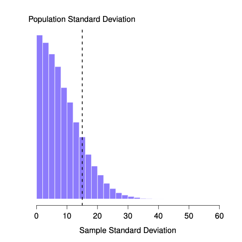
Even though the true population standard deviation is 15, the average of the sample standard deviations is only 8.5. Notice that this is a very different from when we were plotting sampling distributions of the sample mean, those were always centered around the mean of the population.
Now let’s extend the simulation. Instead of restricting ourselves to the situation where we have a sample size of \(N=2\), let’s repeat the exercise for sample sizes from 1 to 10. If we plot the average sample mean and average sample standard deviation as a function of sample size, you get the following results.
@fig-estimatorbiasA shows the sample mean as a function of sample size. Notice it’s a flat line. The sample mean doesn’t underestimate or overestimate the population mean. It is an unbiased estimate!
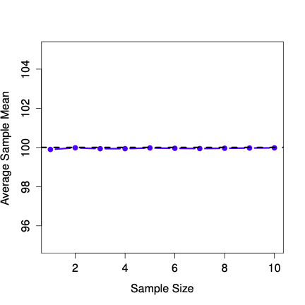
Figure 4.21 shows the sample standard deviation as a function of sample size. Notice it is not a flat line. The sample standard deviation systematically underestimates the population standard deviation!
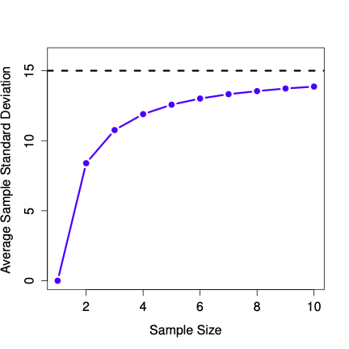
In other words, if we want to make a “best guess” (\(\hat\sigma\), our estimate of the population standard deviation) about the value of the population standard deviation \(\sigma\), we should make sure our guess is a little bit larger than the sample standard deviation \(s\).
The fix to this systematic bias turns out to be very simple. Here’s how it works. Before tackling the standard deviation, let’s look at the variance. If you recall from the second chapter, the sample variance is defined to be the average of the squared deviations from the sample mean. That is: \[s^2 = \frac{1}{N} \sum_{i=1}^N (X_i - \bar{X})^2\] The sample variance \(s^2\) is a biased estimator of the population variance \(\sigma^2\). But as it turns out, we only need to make a tiny tweak to transform this into an unbiased estimator. All we have to do is divide by \(N-1\) rather than by \(N\). If we do that, we obtain the following formula: \[\hat\sigma^2 = \frac{1}{N-1} \sum_{i=1}^N (X_i - \bar{X})^2\] This is an unbiased estimator of the population variance \(\sigma\).
A similar story applies for the standard deviation. If we divide by \(N-1\) rather than \(N\), our estimate of the population standard deviation becomes: \[\hat\sigma = \sqrt{\frac{1}{N-1} \sum_{i=1}^N (X_i - \bar{X})^2}\].
It is worth pointing out that software programs make assumptions for you, about which variance and standard deviation you are computing. Some programs automatically divide by \(N-1\), some do not. You need to check to figure out what they are doing. Don’t let the software tell you what to do. Software is for you telling it what to do.
One final point: in practice, a lot of people tend to refer to \(\hat{\sigma}\) (i.e., the formula where we divide by \(N-1\)) as the sample standard deviation. Technically, this is incorrect: the sample standard deviation should be equal to \(s\) (i.e., the formula where we divide by \(N\)). These aren’t the same thing, either conceptually or numerically. One is a property of the sample, the other is an estimated characteristic of the population. However, in almost every real life application, what we actually care about is the estimate of the population parameter, and so people always report \(\hat\sigma\) rather than \(s\).
Note
Note, whether you should divide by N or N-1 also depends on your philosophy about what you are doing. For example, if you don’t think that what you are doing is estimating a population parameter, then why would you divide by N-1? Also, when N is large, it doesn’t matter too much. The difference between a big N, and a big N-1, is just -1.
This is the right number to report, of course, it’s that people tend to get a little bit imprecise about terminology when they write it up, because “sample standard deviation” is shorter than “estimated population standard deviation”. It’s no big deal, and in practice I do the same thing everyone else does. Nevertheless, I think it’s important to keep the two concepts separate: it’s never a good idea to confuse “known properties of your sample” with “guesses about the population from which it came”. The moment you start thinking that \(s\) and \(\hat\sigma\) are the same thing, you start doing exactly that.
To finish this section off, here’s another couple of tables to help keep things clear:
| Symbol | What is it? | Do we know what it is? |
|---|---|---|
| \(s^2\) | Sample variance | Yes, calculated from the raw data |
| \(\sigma^2\) | Population variance | Almost never known for sure |
| \(\hat{\sigma}^2\) | Estimate of the population variance | Yes, but not the same as the sample variance |
4.15 Estimating a confidence interval
Statistics means never having to say you’re certain – Unknown origin
Up to this point in this chapter, we’ve outlined the basics of sampling theory which statisticians rely on to make guesses about population parameters on the basis of a sample of data. As this discussion illustrates, one of the reasons we need all this sampling theory is that every data set leaves us with some of uncertainty, so our estimates are never going to be perfectly accurate. The thing that has been missing from this discussion is an attempt to quantify the amount of uncertainty in our estimate. It’s not enough to be able guess that the mean IQ of undergraduate psychology students is 115 (yes, I just made that number up). We also want to be able to say something that expresses the degree of certainty that we have in our guess. For example, it would be nice to be able to say that there is a 95% chance that the true mean lies between 109 and 121. The name for this is a confidence interval for the mean.
Armed with an understanding of sampling distributions, constructing a confidence interval for the mean is actually pretty easy. Here’s how it works. Suppose the true population mean is \(\mu\) and the standard deviation is \(\sigma\). I’ve just finished running my study that has \(N\) participants, and the mean IQ among those participants is \(\bar{X}\). We know from our discussion of the central limit theorem that the sampling distribution of the mean is approximately normal. We also know from our discussion of the normal distribution that there is a 95% chance that a normally-distributed quantity will fall within two standard deviations of the true mean. To be more precise, we can use the qnorm() function to compute the 2.5th and 97.5th percentiles of the normal distribution
qnorm( p = c(.025, .975) ) [1] -1.959964 1.959964
Okay, so I lied earlier on. The more correct answer is that a 95% chance that a normally-distributed quantity will fall within 1.96 standard deviations of the true mean.
Next, recall that the standard deviation of the sampling distribution is referred to as the standard error, and the standard error of the mean is written as SEM. When we put all these pieces together, we learn that there is a 95% probability that the sample mean \(\bar{X}\) that we have actually observed lies within 1.96 standard errors of the population mean. Oof, that is a lot of mathy talk there. We’ll clear it up, don’t worry.
Mathematically, we write this as: \[\mu - \left( 1.96 \times \mbox{SEM} \right) \ \leq \ \bar{X}\ \leq \ \mu + \left( 1.96 \times \mbox{SEM} \right)\] where the SEM is equal to \(\sigma / \sqrt{N}\), and we can be 95% confident that this is true.
However, that’s not answering the question that we’re actually interested in. The equation above tells us what we should expect about the sample mean, given that we know what the population parameters are. What we want is to have this work the other way around: we want to know what we should believe about the population parameters, given that we have observed a particular sample. However, it’s not too difficult to do this. Using a little high school algebra, a sneaky way to rewrite our equation is like this: \[\bar{X} - \left( 1.96 \times \mbox{SEM} \right) \ \leq \ \mu \ \leq \ \bar{X} + \left( 1.96 \times \mbox{SEM}\right)\] What this is telling is is that the range of values has a 95% probability of containing the population mean \(\mu\). We refer to this range as a 95% confidence interval, denoted \(\mbox{CI}_{95}\). In short, as long as \(N\) is sufficiently large – large enough for us to believe that the sampling distribution of the mean is normal – then we can write this as our formula for the 95% confidence interval: \[\mbox{CI}_{95} = \bar{X} \pm \left( 1.96 \times \frac{\sigma}{\sqrt{N}} \right)\] Of course, there’s nothing special about the number 1.96: it just happens to be the multiplier you need to use if you want a 95% confidence interval. If I’d wanted a 70% confidence interval, I could have used the qnorm() function to calculate the 15th and 85th quantiles:
qnorm( p = c(.15, .85) ) [1] -1.036433 1.036433
and so the formula for \(\mbox{CI}_{70}\) would be the same as the formula for \(\mbox{CI}_{95}\) except that we’d use 1.04 as our magic number rather than 1.96.
4.15.1 A slight mistake in the formula
As usual, I lied. The formula that I’ve given above for the 95% confidence interval is approximately correct, but I glossed over an important detail in the discussion. Notice my formula requires you to use the standard error of the mean, SEM, which in turn requires you to use the true population standard deviation \(\sigma\).
Yet, before we stressed the fact that we don’t actually know the true population parameters. Because we don’t know the true value of \(\sigma\), we have to use an estimate of the population standard deviation \(\hat{\sigma}\) instead. This is pretty straightforward to do, but this has the consequence that we need to use the quantiles of the \(t\)-distribution rather than the normal distribution to calculate our magic number; and the answer depends on the sample size. Plus, we haven’t really talked about the \(t\) distribution yet.
When we use the \(t\) distribution instead of the normal distribution, we get bigger numbers, indicating that we have more uncertainty. And why do we have that extra uncertainty? Well, because our estimate of the population standard deviation \(\hat\sigma\) might be wrong! If it’s wrong, it implies that we’re a bit less sure about what our sampling distribution of the mean actually looks like… and this uncertainty ends up getting reflected in a wider confidence interval.
4.16 Summary
In this chapter I’ve covered two main topics. The first half of the chapter talks about sampling theory, and the second half talks about how we can use sampling theory to construct estimates of the population parameters. The section breakdown looks like this:
Basic ideas about samples, sampling and populations
Statistical theory of sampling: the law of large numbers, sampling distributions and the central limit theorem.
Estimating means and standard deviations
confidence intervals
As always, there’s a lot of topics related to sampling and estimation that aren’t covered in this chapter, but for an introductory psychology class this is fairly comprehensive I think. For most applied researchers you won’t need much more theory than this. One big question that I haven’t touched on in this chapter is what you do when you don’t have a simple random sample. There is a lot of statistical theory you can draw on to handle this situation, but it’s well beyond the scope of this book.
4.17 Videos
4.17.1 Introduction to Probability
Jeff has several more videos on probability that you can view on his statistics playlist.